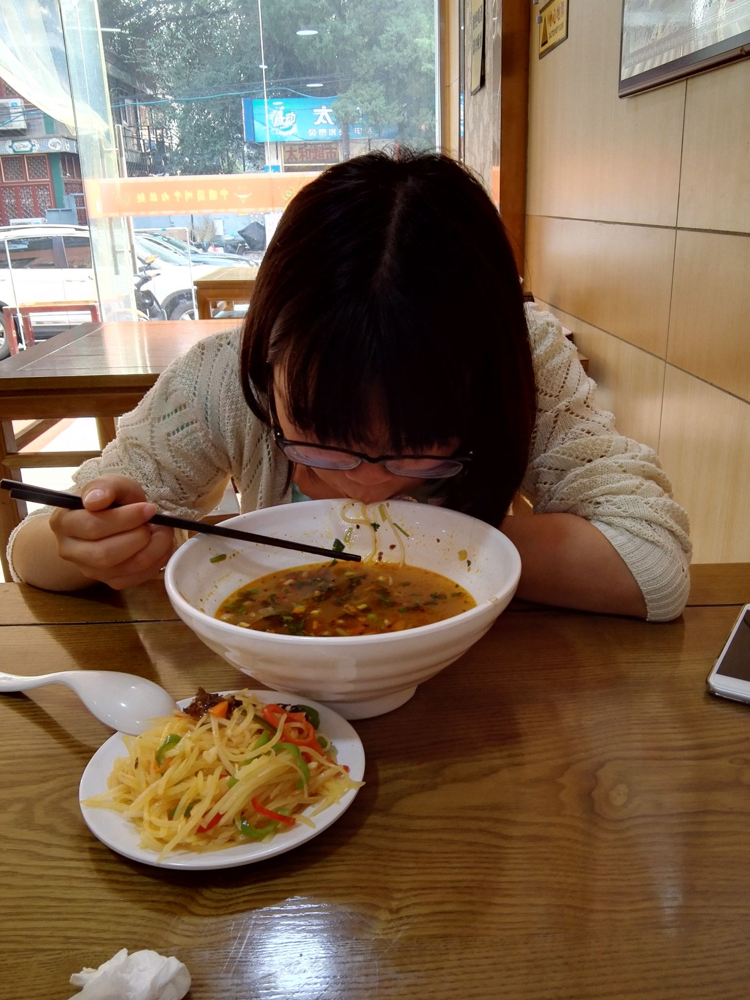
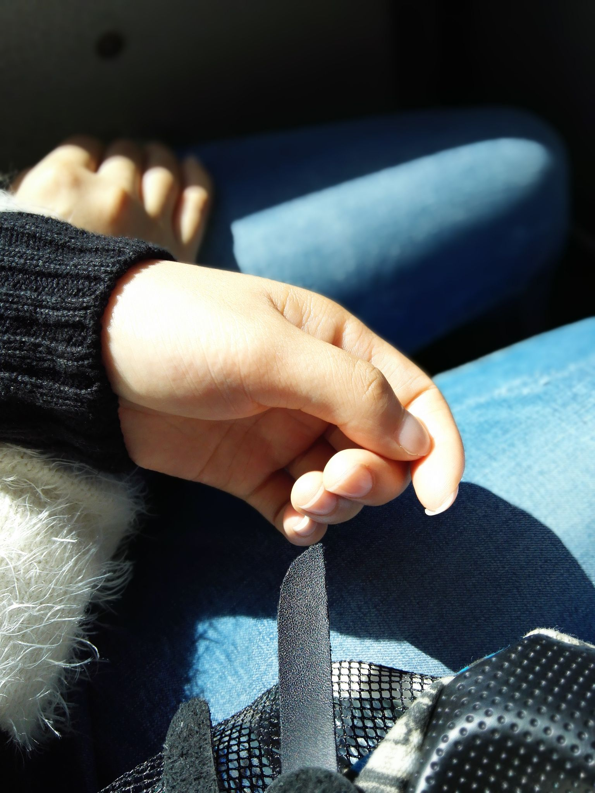

正文:
没想到这么多赞，谢谢大家的祝福！
既然这篇回答是说的女票，那我就再多说一些我和女票的事吧，想到哪儿说到哪儿。
我和她是高中同学，喜欢她也并不是一见钟情，而是慢慢熟悉之后，感情就渐渐变得和以前不一样了。其实我和她之间的故事很平凡，平凡到几乎每个中学都有这样的小情侣——很少秀恩爱，偶尔吵架，晚自习前一起吃晚饭，在同学们之间也没有话题性……高中班上年级上除了我们俩也还有别的情侣们，各自有着自己的或精彩或曲折或浪漫的故事，然而高中毕业之后，各自分散，到现在，应该只剩寥寥几对还在一起往前走吧。
刚认识她的时候，她成绩优秀，性格安静，每天除了学习基本上没有别的活动。也不会打扮，总之一眼看上去就是一个书呆子类型的女生。而我在班上成绩中下，也不是班干部，体育也一般，是一个毫无干劲的普通男生——有点像火影里面的鹿丸，当然我远没有鹿丸那么高的智商。
确实同年龄的女生要比男生成熟很多。高中时候她永远都是学习摆在第一位，因此难免会有时候忽略我的感受。高三之前我们为此也冷战了好多次，我们从来不吵架，出了问题都是冷战。那时候每次冷战，我都感觉心如刀绞，感觉天崩地裂，日月无光，现在看来，那时候我的那些感受不过是一个中二少年在那里幼稚的自怨自艾……
到了高三我好像一下子就变了性格，因为我突然发现，剩下的高中生活已经不多了，也许高中一毕业，我就会和她相隔万里，然后和大多数高中情侣一样，毕业季变成分手季。那么与其把时间浪费在那些无聊的自怜自叹里，为什么不珍惜剩下的每一天呢？于是我每天陪她吃饭，放学了送她回家，从那以后一直到现在，我和她再也没有闹过一次矛盾。
女票是个一点都不娇气的女生。和她出去玩，不管有多累，她都不会发牢骚，不会闹脾气。其实她内心挺坚强的，这点可能她自己都不知道。现在和她一年只能见两次面，其余时候都在和手机谈恋爱。异地恋真的很辛苦，这样的日子也许还会持续很多年，希望我们能够坚持着一路走下去吧。
对啦，我和她都是初恋，哈哈哈。
以下是原答案：
女票158，体重110……左右，算是有点小胖吧。
和她高中同班，读大学后开始异地，她在北京我在成都，到现在也快两年了。也许有点胖胖的女生都比较温柔？反正我和她都是性子很温和的人，所以在一起后一次架都没吵过。身边的朋友们都对此很惊讶，可能是我和她性格太好了吧～
她体重最重的时候是高考前，高考体检的时候体重一度比我还重！当然我高中时候比较瘦，178的身高只有110多斤，瘦骨嶙峋。
其实她身材并不胖，主要是脸大，然后腿有点粗，差不多像下面这样
她特别爱吃，而且也很能吃……有次我们俩去吃火锅，点了差不多四人份，她一个人吃了三人份……还有次和她去吃面，特大份的兰州牛肉面，我都吃不完，她差点连汤都喝了
她刚刚还告诉我说她昨晚做梦梦见她妈妈给她煎了一盆饼，她全部吃光了，虽然是在梦里……
其实只看半边脸还好哈哈
手也是那种泡泡手，没有一点纤细的感觉哈哈
她有时候喜欢做嘟嘴的表情，嘴巴一嘟脸就鼓起来，更圆了，每次她做这个表情我就想两只手去揉她的脸
上了大学她就说要减肥，去年也取得了一定的成效，一度瘦到了九十多斤，瘦下来的时候至少背影看起来还挺“苗条”的
当然后来过年就吃吃吃，于是体重就快速反弹。今年她办了个健身卡开始健身，结果不但没减脂，反而似乎增了肌，变得更重了。唯一的成就是把腹肌练出来了？！腹肌照就不发了……
为了减肥她给我发了不少的牢骚，尤其是每次嘴馋肚子饿的时候。减了这么久的肥，她还是脸蛋鼓鼓的，大腿粗粗的。其实胖胖的女票，捏起来真的很舒服，软软的，但是她怕痒，一直不许我捏她。
异地这么久了，感情也从最开始的充满激情慢慢趋于平淡。也许是性格使然，我和她两年的情侣却仿佛已经成了老夫老妻，互相之间已经不止是情人，更兼有亲人的感觉。也许是因为在最青春的时候互相认识的吧，
最后附上她的一堆照片，谢谢观看～